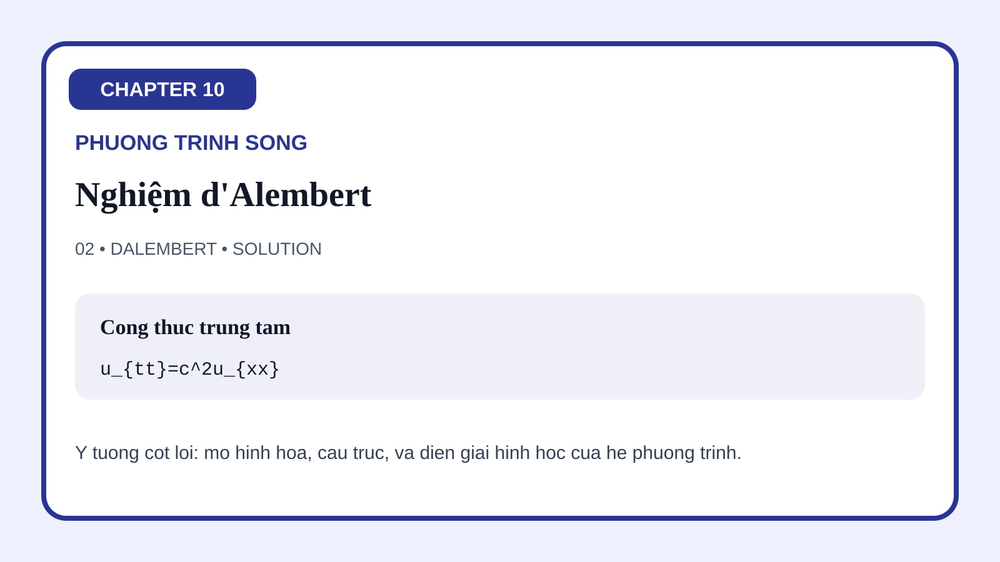
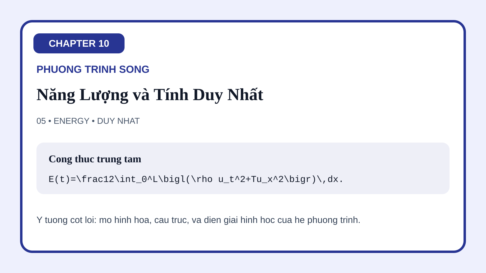

10-01 Suy Ra Phương Trình Sóng
Hình mở đầu chuyển cân bằng lực, lực căng và quán tính thành mô hình PDE, đồng thời làm nổi bật sự tương phản giữa lan truyền sóng và khuếch tán nhiệt.
Trang này gom toàn bộ bộ minh họa của Chương 10 về phương trình sóng. Các hình được sắp để làm rõ hình học trung tâm của sóng: suy ra mô hình từ cân bằng lực, lan truyền với tốc độ hữu hạn, sóng dừng trên miền hữu hạn, ảnh hưởng của hình học trong nhiều chiều, bảo toàn năng lượng, tương tác với biên, các hiệu ứng tán sắc và hấp thụ, cùng những ứng dụng lớn trong âm học và điện từ học.
Hình mở đầu chuyển cân bằng lực, lực căng và quán tính thành mô hình PDE, đồng thời làm nổi bật sự tương phản giữa lan truyền sóng và khuếch tán nhiệt.
Minh họa này làm cho sóng truyền sang trái và sang phải trở nên trực quan, biến công thức d'Alembert thành một quy luật lan truyền theo đặc trưng.

Cấu trúc của sóng dừng hiện ra qua các mode riêng và tần số riêng, làm rõ cách điều kiện biên lượng tử hóa dao động.
Hình này mở rộng câu chuyện từ dây rung sang màng rung và môi trường ba chiều, nhấn mạnh vai trò của hình học miền và lựa chọn hệ tọa độ.
Hình năng lượng cho thấy sóng vận chuyển năng lượng thay vì phá hủy nó, và vì sao các đồng nhất thức bảo toàn trở thành công cụ chứng minh tính duy nhất.

Hình này mô tả trực quan những gì xảy ra khi sóng gặp biên hoặc mặt phân cách, giúp giải thích phản xạ, truyền qua và vai trò của trở kháng.
Sự đối lập giữa tán sắc và tắt dần được thể hiện qua gói sóng và sự suy giảm biên độ, giúp phân biệt hai cơ chế vốn rất dễ bị lẫn với nhau.
Hình cuối mở rộng chương từ dây rung cơ học sang âm thanh và điện từ, cho thấy cùng một khung PDE có thể mang nhiều diễn giải vật lý khác nhau.